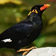

Browse panel
The list pane holds the sections with a photo (or a tile), their enclosures and a count; the chosen one is outlined (row is-selected). The main pane has the section's title and figures, the person in charge, a search, the enclosure cards and a foot with how many are shown and a View all button. Below 840px the panes stack.
 Aviary section8,670Herbivore section214Reptile house72
Aviary section8,670Herbivore section214Reptile house72 Carnivore section38Primate section31
Carnivore section38Primate section31 Wetland12Quarantine6Transfer section1View all 15 sections
Wetland12Quarantine6Transfer section1View all 15 sectionsAviary section
52 enclosures · 8,670 animals · 25 species
100 animals · 1 species
Aviary 2
117 animals · 2 species
Aviary 3133 animals · 3 species
Inspection dueAviary 4150 animals · 1 species
Aviary 5167 animals · 2 species
Aviary 6183 animals · 3 species
1 under treatmentAviary 7200 animals · 1 species
Aviary 8217 animals · 2 species
Aviary 9233 animals · 3 species
Aviary 10100 animals · 1 species
Inspection dueAviary 11117 animals · 2 species
Aviary 12133 animals · 3 species
Enclosure cards
A variant of the card (card--enclosure): the name and a chevron, the species as overlapping photos, the animals and species counts, and a status pill when something needs doing (Inspection due, 1 under treatment). The whole card is a link that opens the enclosure.
Figures panel and compact contact
The figures panel (figures) sets two to four figures in one panel with dividers; a figure can be a name (Ravi, Keeper). On a photo use figures--glass. The compact contact (contact--pill, contact--glass on photos) is the person in charge with call and chat; each button names the person.

Browse panel
- Show the chosen section in the list and in the main pane title.
- Say how many are shown and offer View all.
- Put more than four figures in one panel.
- Use colour alone for a status: the pill has words.
Browse panel
Classes
.browse.browse__list.browse__thumb.browse__count.browse__main.browse__head.browse__grid.browse__foot.card--enclosure.card__figure.figures.figures--glass.contact--pill.contact--glassMarkup
<a class="card card--enclosure" href="#"><span class="card__head"><b class="card__title">Aviary 3</b><svg class="icon" aria-hidden="true"><use href="#i-chevron-right"/></svg></span><span class="avatar-stack"><span class="avatar"><img src="../assets/img/species/hill-myna.webp" alt="Hill myna"></span><span class="avatar"><img src="../assets/img/species/black-kite.webp" alt="Black kite"></span><span class="avatar"><img src="../assets/img/species/sarus-crane.webp" alt="Sarus crane"></span></span><p class="card__figure"><b>133</b> animals · 3 species</p><span class="status status--caution">Inspection due</span></a>